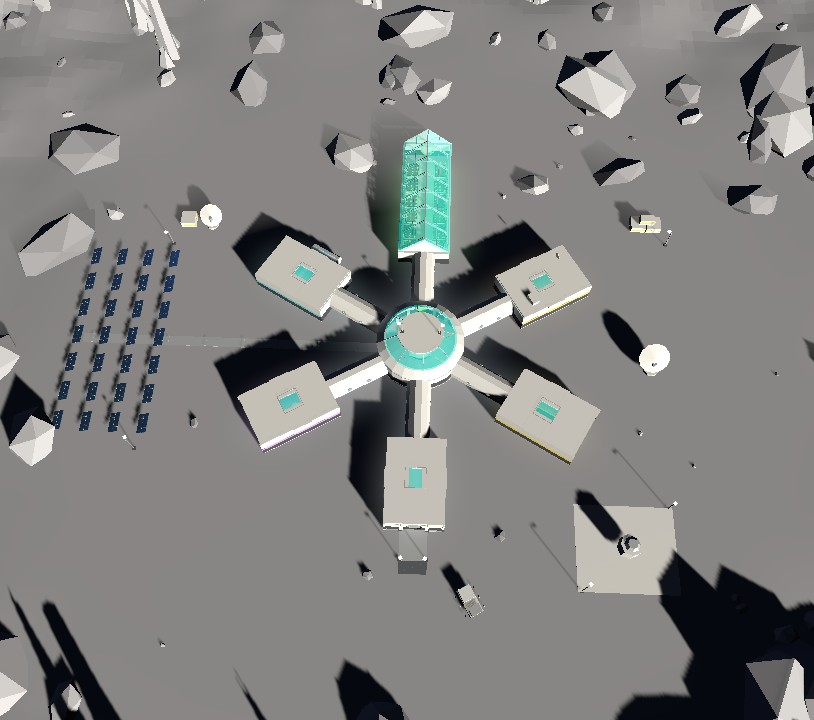
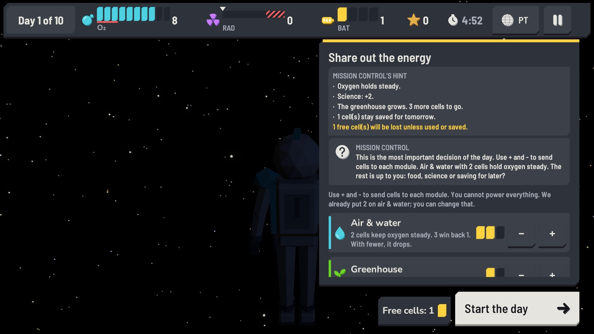
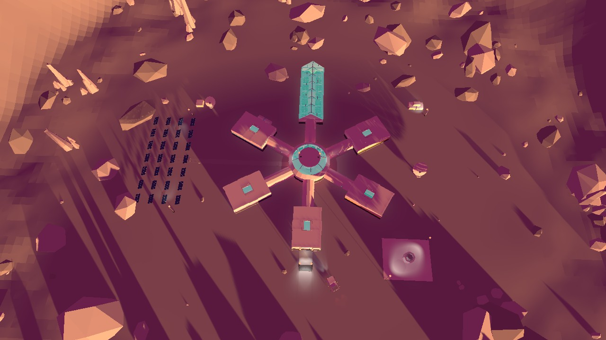
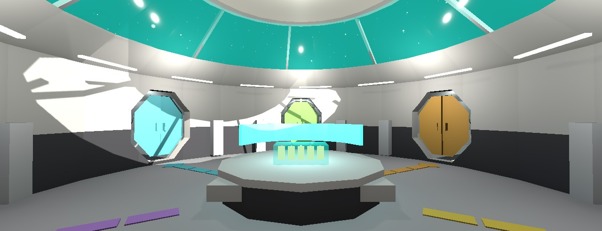

TDM-01 · Overview
Ten Days on the Moon
A strategy game for ages 7 to 12. You run a base at the Moon's south pole, and there is never enough power for everything.
Team Houston, We have a Game! · Challenge: Build a Junior Astronaut Mission Trainer · NASA Space Apps Challenge 2026

TDM-02 · Crew
Six people, one question: can a kid feel why a Moon base is hard to run?
Build a Junior Astronaut Mission Trainer
Goal: a player aged 7 to 12 leaves understanding one real constraint of surviving in space.
Crew manifest · Houston, We have a Game!
TDM-03 · Day cycle
Every day ends with the same question: where does the power go?
Morning briefing
Today's light, alerts and news
One task
A mini-game with a cost
Share the energy
Few cells, five modules
The day plays out
Flares, harvest, battery
Results
What happened and why
TDM-04 · Trade-off
Nothing is free

There are interesting rocks out there
Go out to fetch rocks
Stay at base
Going out earns science and spends suit air. Staying in saves air and misses the discovery.
TDM-05 · Space weather
The solar flares really happened

It really happened
Archived data · not liveSolar flare class X9.0 · October 3, 2024
In the game it counts as a strong flare.
Source: NASA DONKI (CCMC). Archived data, retrieved on 2026-11-13. Not live data.
20 of 1,982
real solar flares from the NASA DONKI catalog, 2017 to 2026
The real class sets the dose
C · weak
M · medium
X · strong
Shelter cells: 2 = protected, 1 = half dose, 0 = full dose.
Some alerts are false alarms. Shielding always costs energy, so the player has to weigh the risk.
TDM-06 · Sources
Real facts are labeled real. Game rules are labeled rules.
Every real fact appears in the game with its NASA source, and the Credits screen lists them all.
TDM-07 · Debrief
What a kid takes home
“You can't power everything. On the Moon, every choice costs something.”
The one sentence a 7-to-12-year-old should be able to say after one mission.
Failure teaches: the crew goes home safely and the report shows what weighed most.
Not a NASA product · Art and code made with AI assistance, disclosed in the game

Where it goes next
In the browser
No download, no account.
English and Portuguese
Switch at any time, more languages next.
Astronaut health
Events built on NASA OSDR research.
A Mars outpost
Same trade-offs, with a 20-minute delay.